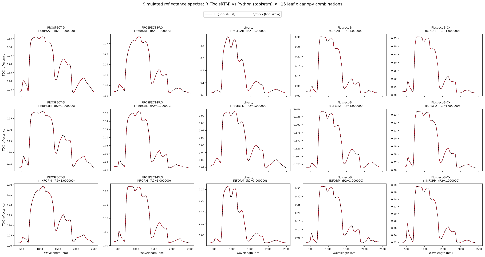
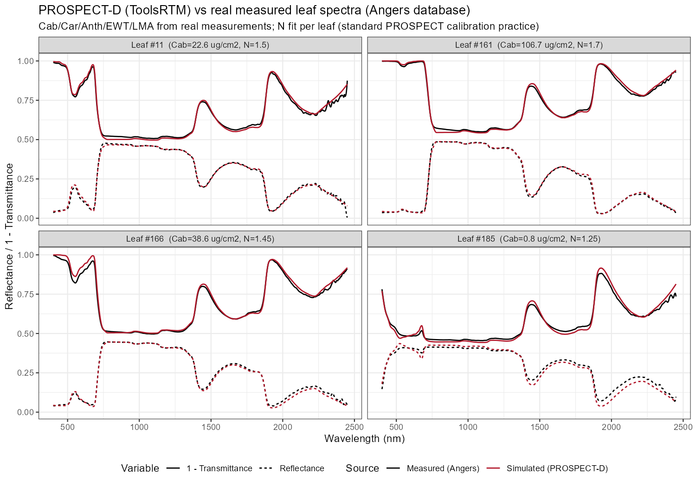

Pipeline
HYDRA-EO scientific workflow
From observations to explainable crop-stress information
HYDRA-EO connects field measurements, UAV and airborne imaging, satellite Earth Observation, radiative transfer modelling, and machine learning in one traceable pipeline. RTM-Suite provides the physical modelling layer that links measured spectra with plant traits and functioning.
01
Reference observations
Plant physiology, biochemistry, pathology, field spectroscopy, and campaign metadata.
→
02
EO preprocessing
Calibrated field, UAV, airborne, and satellite reflectance, temperature, and fluorescence.
→
03
RTM-Suite
Physically based simulations, sensor convolution, sensitivity analysis, and look-up tables.
→
04
Hybrid inversion
Trait retrieval using LUT matching, classical ML, neural networks, and deep learning.
→
05
Stress intelligence
Disease detection, stress discrimination, uncertainty, validation, and spatial upscaling.
1. Multi-scale observations and reference data
The pipeline begins with coordinated measurements that describe both the remote-sensing signal and the biological processes behind it.
Ground reference
Plant and disease measurements
Leaf pigments, water and dry matter, LAI, biomass, photosynthesis, fluorescence, canopy temperature, visual symptoms, pathogen assessments, and crop development.
UAV & airborne
High-resolution imaging
VNIR-SWIR hyperspectral, thermal, fluorescence/SIF, and RGB acquisitions are radiometrically and geometrically corrected, mosaicked, quality-controlled, and co-registered with field plots.
Satellite EO
Regional and temporal context
Sentinel-2, PRISMA, and EnMAP data are atmospherically corrected, cloud-masked, resampled, and harmonised to support time-series analysis and spatial upscaling.

High-resolution hyperspectral campaign products provide the bridge between plot measurements and satellite observations.
2. RTM-Suite as the physical modelling core
RTM-Suite brings the models used by HYDRA-EO into a consistent R and Python ecosystem. Instead of learning statistical relationships from observations alone, the project generates physically plausible combinations of plant traits, canopy structure, soil background, atmosphere, illumination, and viewing geometry.
Models used across the workflow
- Leaf optics: PROSPECT-D, PROSPECT-PRO, Liberty, Fluspect-B, and Fluspect-Cx.
- Canopy reflectance: fourSAIL, foursail2, INFORM, and PROSAIL configurations.
- Soil and atmosphere: MARMIT and SPART.
- Plant functioning: SCOPE energy balance, photosynthesis, thermal emission, and sun-induced fluorescence.
- R and Python: ToolsRTM, SCOPEinR, toolsrtm, and scopeinpython.
The R and Python implementations are numerically cross-checked, supporting reproducible simulations and transferable workflows.

Common inputs can be propagated through different leaf and canopy model combinations.
3. Simulation libraries, sensitivity, and sensor harmonisation
Parameter design & LUTs
Trait ranges and dependencies are defined from literature, field observations, and crop-specific knowledge. Sampling strategies generate look-up tables that cover healthy, water-stressed, nutrient-limited, and disease-affected conditions.
Sensitivity analysis
Local sweeps, Sobol indices, and relative-importance methods identify which traits affect specific spectral regions, thermal responses, or fluorescence signals. This guides feature selection and sensor requirements.
Sensor convolution
Hyperspectral simulations are convolved to measured sensor response functions. This creates comparable inputs for field spectrometers, UAV cameras, Sentinel-2, PRISMA, EnMAP, FLEX, and future CHIME configurations.

Model families describe complementary leaf, canopy, soil, atmosphere, and fluorescence processes.

Model verification and cross-language tests are part of the reproducible workflow.
4. Hybrid trait retrieval and stress discrimination
The simulated libraries train inversion models that translate observations into functional plant traits. HYDRA-EO combines multiple approaches so that performance, interpretability, and uncertainty can be compared.
Forward modelling
Traits and environmental conditions → simulated optical, thermal, and fluorescence signals.
Sensor representation
Full spectra → sensor bands, indices, spectral features, and spatial metrics.
Inverse modelling
Observed signals → chlorophyll, water, LAI, biomass, photosynthetic and stress-related traits.
Stress interpretation
Trait trajectories and multi-sensor evidence → drought, disease, mixed stress, and healthy conditions.
Methods include LUT matching, random forests, gradient boosting, Gaussian processes, neural networks, and deep learning. Physically based simulations provide constraints and training information, while empirical campaign data capture real crop, disease, and environmental variability.
5. Validation, uncertainty, and transfer across scales
Products are evaluated against independent plant measurements, disease labels, field spectra, flux observations, and withheld sites or dates. Validation is performed at the scale at which each product will be used.
Plot and plant level
Trait accuracy, symptom sensitivity, early-detection timing, and physiological consistency.
UAV and aircraft level
Spatial patterns, crown or row consistency, thermal-spectral complementarity, and uncertainty maps.
Satellite level
Sensor transfer, temporal stability, mixed-pixel effects, regional scalability, and mission readiness.
Pipeline outcome
The final products are not limited to disease maps. HYDRA-EO delivers physically interpretable trait estimates, stress indicators, uncertainty information, transferable workflows, and open tools that connect biological processes with operational Earth Observation.
© 2026 HYDRA-EO.
HYDRA-EO is funded by the European Space Agency (ESA) under the EXPRO+ Tender “Crop Multiple Stressors, Pests and Diseases”. Action 1-12684.